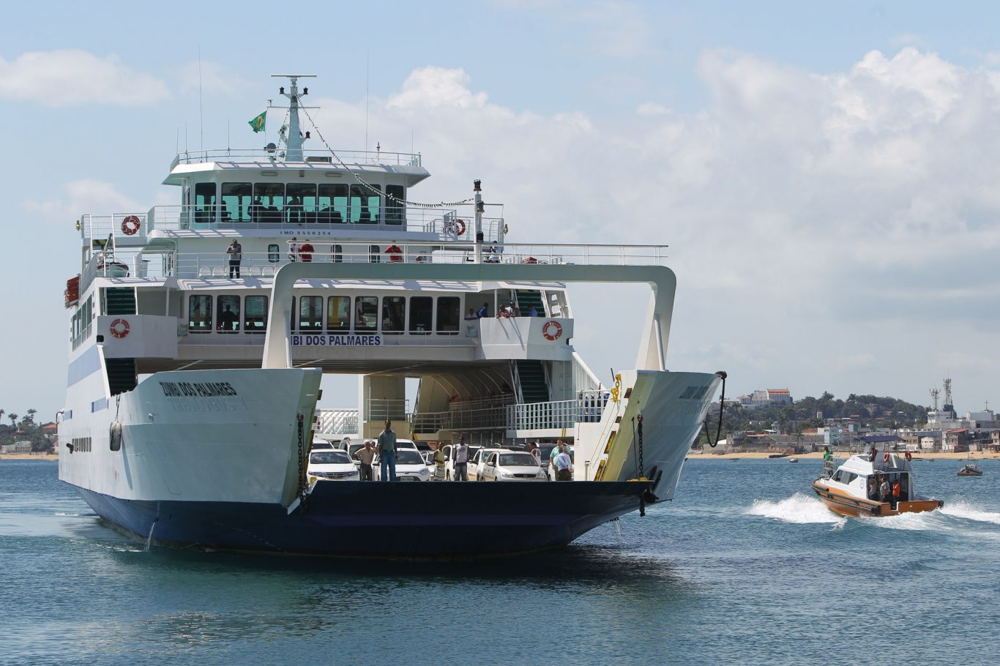

No território brasileiro são encontrados diversos rios que são navegáveis por balsas que transportam tanto pessoas quanto cargas. Como exemplo há a travessia no trecho do baixo São Francisco, que liga o estado de Alagoas com Sergipe. Seu tempo de deslocamento é de aproximadamente 30 minutos, o que cria um alto índice de congestionamento aos arredores do porto. Essa travessia é bastante perigosa devido a precariedade das balsas por:
Buscando solucionar esses problemas descritos, idealizamos a implementação de um sistema automatizado, que será aplicado nas embarcações denominadas FerryBoat (Barco reforçado para o transporte de veículos e passageiros entre as margens de um rio ou para um trecho marítimo curto).
O sistema consiste em controlar e monitorar o motor elétrico, velocidade, peso, navegação e segurança através de um CLP Rockwell em que será utilizado um servo-motor Rockwell para o controle do leme, uma célula de carga para o controle do peso, sensores inteligentes de velocidade, e um controle remoto para navegação. A IHM (interface Homem–Máquina) será responsável pela supervisão dos processos de controle geral da embarcação, sendo possível realizar as alterações de setpoint de velocidade, angulação do servo-motor, alertas de sobrecargas e controle dos níveis de tensão das baterias.
E visando o conceito de sustentabilidade, serão implantados painéis fotovoltaicos, conectados ao inversor Rockwell e ao módulo de regeneração de energia para auxiliar na realimentação do sistema armazenamento de energia elétrica. Além disso, o projeto contribui para a redução de emissão de gases poluente, ruídos sonoros, resíduos líquidos e sólidos despejados nos rios ajudando na preservação do meio ambiente.
